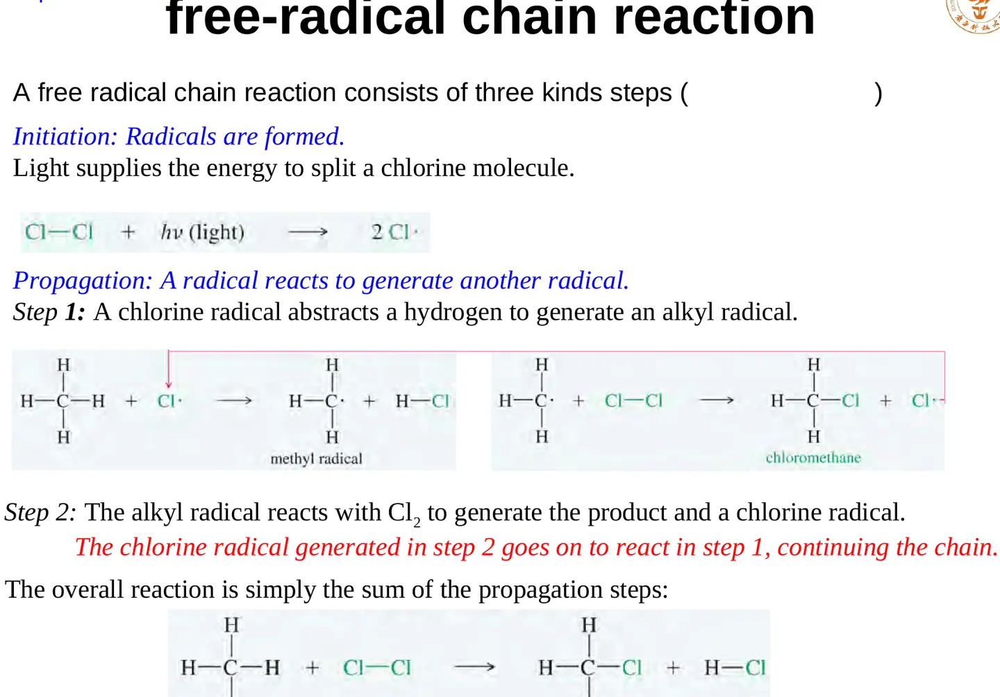
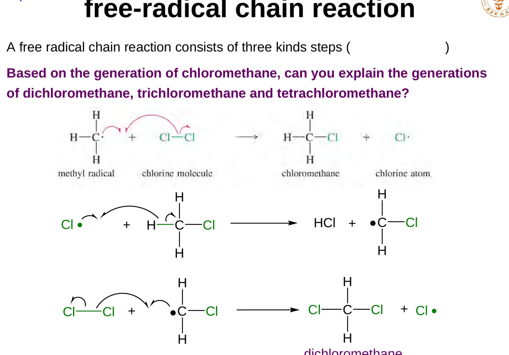
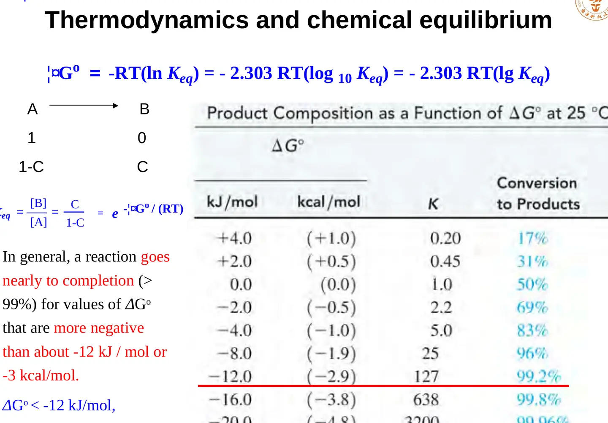
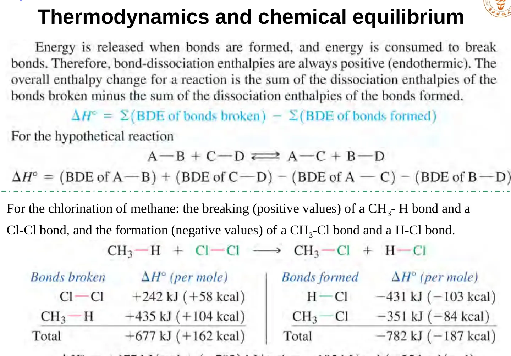
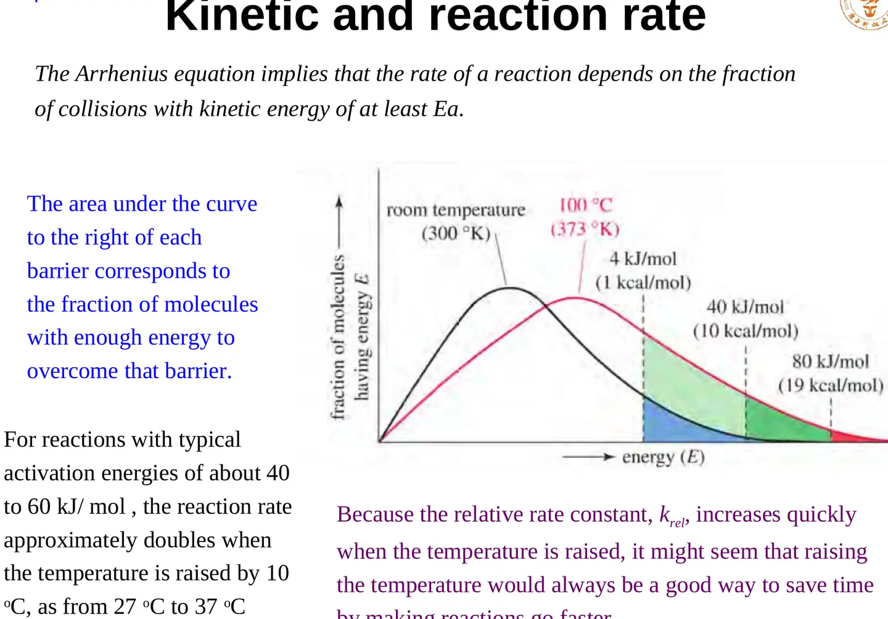
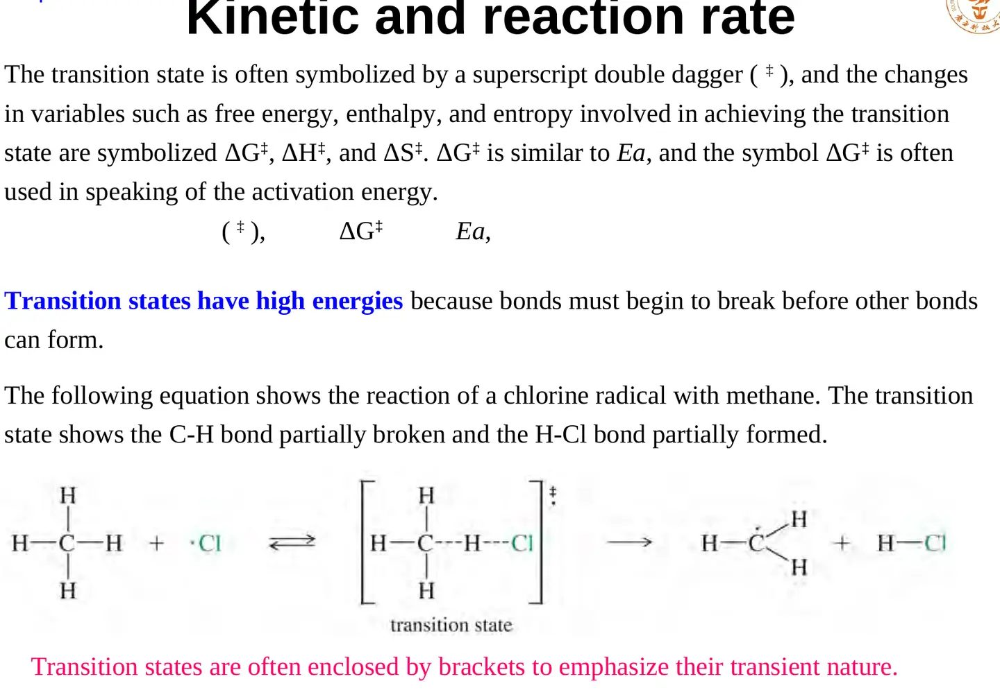
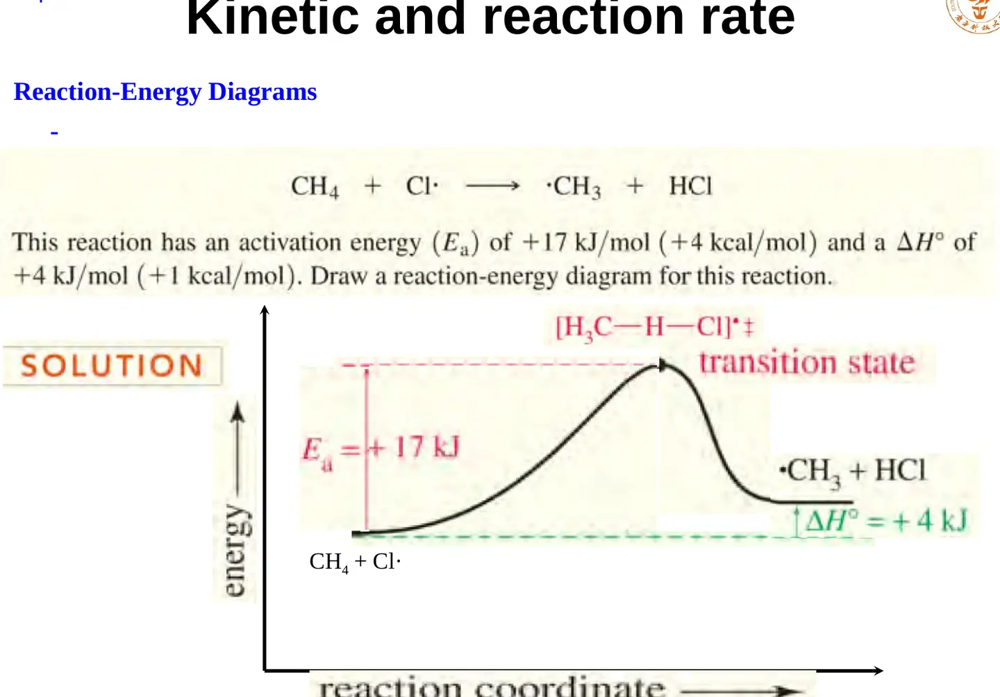

给出逐步过程、活性中间体和电子流。合理机理必须能解释速率规律、同位素效应、产物组成等实验事实。
LECTURE 05 · CHAPTER 4
自由基链反应、热力学与反应动力学
Radical chain reactions, thermodynamics, equilibrium, kinetics and transition states
课堂速记修订课件原图公式逐项释义课程问答
1. 研究反应时要分清三个问题
总反应式只能告诉我们反应物和产物，不能说明反应怎样发生。分析有机反应时应同时回答三个层面的问题：反应机理（reaction mechanism）描述每一步哪些键断裂、哪些键形成以及电子如何移动；热力学比较反应物和产物的自由能，判断平衡偏向哪一侧；动力学研究反应速率与反应路径，决定实验时间尺度内实际生成什么。
回答“最终哪一侧更稳定、平衡能走多远”。它不保证反应在有限时间内一定发生。
回答“走哪条路径更快”。能垒较低的产物可能先生成，即使它并非最稳定产物。
光、热、浓度、溶剂与催化剂能够改变可用路径或反应速率，但不会把热力学与动力学混成同一个概念。
核心辨析
ΔG° 决定平衡位置；ΔG‡ 或 Ea 决定反应跨越能垒的难易。一个反应可以热力学有利却动力学极慢。
2. 甲烷氯化为何需要蓝光
甲烷与氯气在室温、无光条件下并不明显反应，因为稳定的 Cl–Cl 键必须先断裂，体系才能产生足够活泼的氯自由基。氯气强烈吸收蓝光；一个光子的能量可使 Cl–Cl 键发生均裂（homolysis），两个成键电子各随一个氯原子离开，形成两个 Cl·。单电子的移动用鱼钩形半箭头表示，不能用普通双电子弯箭头替代。
Cl–Cl + hν → 2 Cl·
其中 h 为普朗克常数，ν 为光频率，hν 表示单个光子的能量。光在此不是普通反应物，而是提供引发所需能量。若一个被吸收的光子最终带来许多个 CH₃Cl 分子，就说明体系不是“一光子对应一次反应”，而是光只负责启动能反复传递自由基的链过程。
3. 自由基链反应的三类基本步骤
自由基（radical）含有未成对电子，通常用圆点表示。它并非简单的“缺一个电子的离子”，可以是电中性的 CH₃· 或 Cl·。自由基链反应由引发、链增长和链终止组成。

3.1 链引发 / Initiation
链引发把稳定分子转变为活性中间体。Cl₂ 吸光均裂是本反应的引发步骤。引发消耗能量且产生自由基，但不直接解释大量产物的形成。
3.2 链增长 / Propagation
Cl· + CH₄ → HCl + CH₃·
CH₃· + Cl₂ → CH₃Cl + Cl·
第一步中氯自由基夺取氢原子，生成 HCl 和甲基自由基；第二步中 CH₃· 与 Cl₂ 反应，生成氯甲烷并再生 Cl·。每一步都以一个自由基开始并产生另一个自由基，所以链能够循环。把两步相加时，CH₃· 与 Cl· 作为中间物种抵消，得到总反应 CH₄ + Cl₂ → CH₃Cl + HCl。
3.3 链终止 / Termination
链终止消耗自由基而不再生成新的自由基，例如 Cl· + Cl· → Cl₂、CH₃· + Cl· → CH₃Cl、CH₃· + CH₃· → C₂H₆。自由基稳态浓度很低时，自由基更容易撞上大量反应物，链增长占优势；反应物逐渐耗尽后，自由基彼此相遇或撞上容器壁的相对概率升高，链终止变得重要。
4. 为什么会继续氯化并得到混合物
CH₃Cl 形成后仍含 C–H 键，Cl· 可以继续夺取氢，依次形成 ·CH₂Cl、·CHCl₂ 和 ·CCl₃，再分别与 Cl₂ 反应，得到 CH₂Cl₂、CHCl₃ 和 CCl₄。因此甲烷氯化往往给出多种氯代物，而不是天然停在一氯代阶段。

若希望提高一氯代产物比例，可使用大量过量甲烷、限制 Cl₂ 的量，并控制转化率，使刚形成的 CH₃Cl 更少遇到 Cl·。这只能改善选择性，通常不能保证绝对单一产物。对于含不同类型氢的烷烃，还需同时考虑各 C–H 键反应性与统计数量，后续会引出自由基稳定性和选择性问题。
5. 平衡常数与标准吉布斯自由能
对一般反应 aA + bB ⇌ cC + dD，严格的平衡常数使用各物种活度：
Keq = aCcaDd / (aAaaBb)
Keq 为平衡常数，ai 为物种 i 的活度；稀溶液中常用相对浓度近似。由化学势关系 μ = μ° + RT ln a，对整个反应求和可得 ΔG = ΔG° + RT ln Q。平衡时 ΔG = 0 且 Q = Keq，因此：
ΔG° = −RT ln Keq = −2.303RT log₁₀Keq
ΔG° 是标准反应吉布斯自由能变，R 是气体常数，T 是绝对温度。ΔG° < 0 对应 Keq > 1，平衡偏向产物；ΔG° > 0 对应 Keq < 1，平衡偏向反应物。这里的“有利”只表示平衡位置，不表示反应一定很快。

6. 焓、熵与键解离焓
ΔG° = ΔH° − TΔS°
ΔH° 是标准焓变，反映反应前后键合与相互作用能的差异；ΔS° 是标准熵变，反映可访问微观状态数与运动自由度的变化。正的 ΔS° 使 −TΔS° 为负，对 ΔG° 有利，但它未必能压过一个很大的正焓变。低温下焓项常更显著，但不能把熵项在所有有机反应中一概忽略，特别是分子数明显变化、成环、缔合或解离过程。
键解离焓（bond-dissociation enthalpy, BDE）是气相中均裂某一特定键所需的焓。用平均 BDE 估算反应焓时：
ΔH°rxn ≈ ΣBDE(断裂的键) − ΣBDE(形成的键)
断键吸热，记正贡献；成键放热，记负贡献。甲烷氯化净生成较强的 H–Cl 与 C–Cl 键，估算 ΔH° 为明显负值，因此反应放热。BDE 法属于近似：同一种键在不同分子环境中的实际解离焓不同，溶剂化和非键相互作用也未被完整计入。

均裂与异裂
均裂使两个原子各保留一个电子并形成自由基；异裂（heterolysis）使两个电子都归同一原子，通常形成离子。BDE 专指均裂过程，不能直接当作异裂能。
7. 速率方程与反应级数
对反应 A + B → 产物，实验速率方程可写为：
v = kr[A]α[B]β
v 为反应速率，kr 为该条件下的速率常数，[A]、[B] 为浓度，α 与 β 分别是相对于 A、B 的反应级数，总级数为 α + β。级数必须由实验确定，不能机械地从总反应式计量系数读取；只有单一步骤基元反应的速率式才能直接按该步分子数写出。
课件中的两个对比例很关键：CH₃Br 与 OH⁻ 反应时，任一物种浓度加倍都使速率加倍，因此 v = k[CH₃Br][OH⁻]，总二级；叔丁基溴反应时，速率依赖 [(CH₃)₃CBr] 而几乎不依赖 [OH⁻]，速率式为 v = k[(CH₃)₃CBr]。两种速率规律预示不同的控速步骤与机理，后续分别对应双分子和单分子亲核取代的典型情形。
8. Arrhenius 方程：温度如何改变速率常数
k = Ae−Ea/(RT)
k 为速率常数；A 为指前因子或频率因子，综合碰撞频率与合适取向；Ea 为活化能；R 为气体常数；T 为绝对温度。指数项近似反映粒子具有足够能量越过能垒的比例。取自然对数得到：
ln k = ln A − (Ea/R)(1/T)
因此作 ln k 对 1/T 图，斜率为 −Ea/R，可由实验求活化能。升温会使高能尾部所占比例快速增加，所以具有约 40–60 kJ·mol⁻¹ 活化能的反应常出现“升高 10 °C，速率约增加一倍”的经验规律；这不是普适定律，也可能被机理改变、副反应或平衡移动破坏。

9. 过渡态、中间体与反应能量图
过渡态（transition state）是反应坐标上能量最高的瞬时构型，用双匕首 ‡ 表示；旧键部分断裂、新键部分形成，不能作为普通物种分离。反应中间体（reaction intermediate）则对应势能面上的局部最低点，虽寿命可能很短，却具有有限稳定性并可能被光谱检测或捕获。

反应能量图的横轴是反应坐标，只表示从反应物到产物的结构变化进程，并非真实时间；纵轴为体系自由能或势能。反应物到峰顶的差为正向活化自由能 ΔG‡，决定速率；产物与反应物的能量差为 ΔG°，决定平衡。催化剂通过提供较低能垒路径加快正、逆反应，但不改变 ΔG° 和最终 Keq。

QUESTIONS RECORDED BEFORE NOTE SUBMISSION
10. 课程问答
Q1为什么甲烷氯化需要光或热？
A
体系必须先产生 Cl·。蓝光被 Cl₂ 吸收并提供 Cl–Cl 均裂所需能量；热也可能通过碰撞分布的高能尾部促使均裂。引发后，链增长循环能够让一个引发事件产生许多产物分子。
Q2为什么会得到混合物，能否只得到一氯代物？
A
CH₃Cl 仍含可被夺取的氢，所以会继续形成 CH₂Cl₂、CHCl₃ 和 CCl₄。使用大量过量甲烷、限制氯气并保持低转化率可提高 CH₃Cl 比例，但难以获得绝对单一产物。
Q3产物出现是因为更稳定，还是因为形成更快？
A
两者都可能。热力学由 ΔG° 与 Keq描述稳定性和平衡位置；动力学由 ΔG‡ 或 Ea 描述形成速度。实验条件下先观察到的产物可能是动力学产物，而长期平衡占优的可能是热力学产物。
Q4自由基浓度低，为什么链反应仍然很快？
A
每次链增长都再生一个自由基，自由基作为“载体”循环使用。低浓度反而减少自由基彼此终止的机会；只要反应物浓度高且两步增长足够快，链长就可以很大。
Q5反应放热是否意味着反应一定快？
A
不意味着。放热描述产物比反应物焓低；速率还取决于过渡态能垒。甲烷与氯气总体反应强烈放热，但没有光或热引发时仍可能长期不发生明显反应。